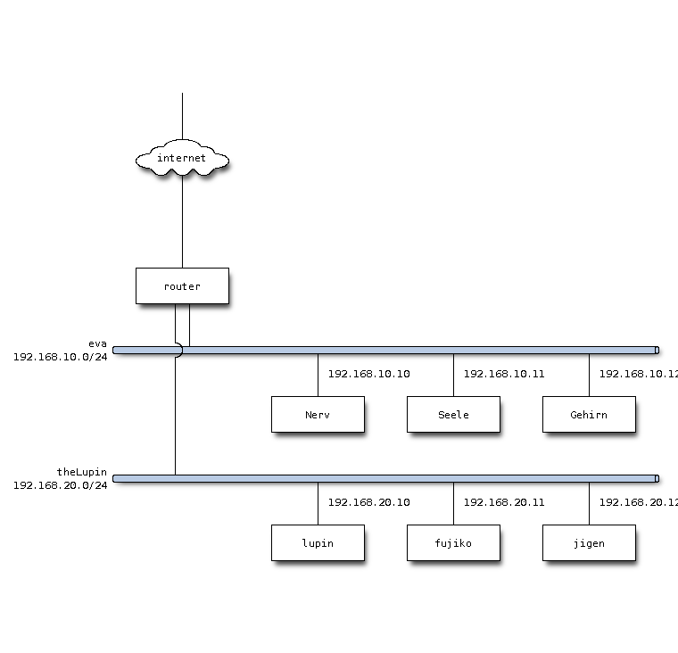

lxc introduction
You may be tempted (or may be not) to create lightweight virtual machine on you host. lxc (LinuX Container) must be one of your options.
Installing lxc package will install all dependent packages.
$ sudo apt-get install lxc
virtual machine is manipulated by lxc- commands.
$ lxc-<TAB><TAB>
lxc-aa-custom-profile lxc-clone lxc-execute lxc-list lxc-restart lxc-unfreeze
lxc-attach lxc-console lxc-freeze lxc-ls lxc-shutdown lxc-unshare
lxc-cgroup lxc-create lxc-halt lxc-monitor lxc-start lxc-version
lxc-checkconfig lxc-destroy lxc-info lxc-netstat lxc-start-ephemeral lxc-wait
lxc-checkpoint lxc-device lxc-kill lxc-ps lxc-stop
You will see lxc related configuration files under /etc/init directory.
$ ls /etc/init/lxc*
/etc/init/lxc-instance.conf /etc/init/lxc-net.conf /etc/init/lxc.conf
You will notice that new virtual interface is added and activated.
$ ifconfig lxcbr0
lxcbr0 Link encap:Ethernet HWaddr a6:1a:10:32:67:87
inet addr:10.0.3.1 Bcast:10.0.3.255 Mask:255.255.255.0
inet6 addr: fe80::a41a:10ff:fe32:6787/64 Scope:Link
UP BROADCAST RUNNING MULTICAST MTU:1500 Metric:1
RX packets:0 errors:0 dropped:0 overruns:0 frame:0
TX packets:84 errors:0 dropped:0 overruns:0 carrier:0
collisions:0 txqueuelen:0
RX bytes:0 (0.0 B) TX bytes:13896 (13.8 KB)
And you will see that DHCP server is already running as well.
dnsmasq -u lxc-dnsmasq --strict-order --bind-interfaces --pid-file=/var/run/lxc/dnsmasq.pid --conf-file= --listen-address 10.0.3.1 --dhcp-range 10.0.3.2,10.0.3.254 --dhcp-lease-max=253 --dhcp-no-override --except-interface=lo --interface=lxcbr0 --dhcp-leasefile=/var/lib/misc/dnsmasq.lxcbr0.leases --dhcp-authoritative
library details
Sometime you feel like (or may not) checking details of certain library on you machine. Suppose that the relevant library may be X related library.
Let us check and search for library name at first. And apt-cache command is your friend.
$ apt-cache search libx11
libx11-6 - X11 client-side library
libx11-6-dbg - X11 client-side library (debug package)
Ok, lib11-6 is what we are looking for. Let us check its content.
$ apt-cache show libx11-6
Package: libx11-6
Priority: standard
Section: libs
Installed-Size: 1489
Maintainer: Ubuntu Developers <ubuntu-devel-discuss@lists.ubuntu.com>
Original-Maintainer: Debian X Strike Force <debian-x@lists.debian.org>
Architecture: i386
Source: libx11
Version: 2:1.5.0-1ubuntu1.1
Depends: libc6 (>= 2.15), libxcb1 (>= 1.2), libx11-data
Pre-Depends: multiarch-support
Filename: pool/main/libx/libx11/libx11-6_1.5.0-1ubuntu1.1_i386.deb
Size: 776896
MD5sum: 3fea2137a989c9cf840c7e0db9b91606
SHA1: 5fcc7ab89b79687fb338e169622a2c57912bcb60
SHA256: 170ce1631c61458216078415ad9d660df98e193c18c4774d45432cb366e64c75
Description-en: X11 client-side library
This package provides a client interface to the X Window System, otherwise
known as 'Xlib'. It provides a complete API for the basic functions of the
window system.
.
More information about X.Org can be found at:
<URL:http://www.X.org>
.
This module can be found at
git://anongit.freedesktop.org/git/xorg/lib/libX11
Multi-Arch: same
Description-md5: d75c895abf6eca234f7480813aaa95ec
Bugs: https://bugs.launchpad.net/ubuntu/+filebug
Origin: Ubuntu
Supported: 9m
Task: standard, kubuntu-active, kubuntu-active, mythbuntu-frontend, mythbuntu-frontend, mythbuntu-desktop, mythbuntu-backend-slave, mythbuntu-backend-slave, mythbuntu-backend-master, mythbuntu-backend-master
You can download source as described.
$ $ git clone git://anongit.freedesktop.org/git/xorg/lib/libX11
network diagram in document
Sometimes you would like to draw network diagram and incorporate it into your document.
It’s so easy with sphinx and nwdiag. For example, prepare such a text as follows and save it as, say, net.diag.
nwdiag {
internet [shape = cloud];
internet -- router;
network eva{
address = "192.168.10.0/24";
router;
Nerv [address = "192.168.10.10"];
Seele [address = "192.168.10.11"];
Gehirn [address = "192.168.10.12"];
}
network theLupin{
address = "192.168.20.0/24";
router;
lupin [address = "192.168.20.10"];
fujiko [address = "192.168.20.11"];
jigen [address = "192.168.20.12"];
}
}
And merge this file into your sphinx document with as follows.
.. nwdiag:: net.diag
Then you will see beautiful network diagram as follows.
